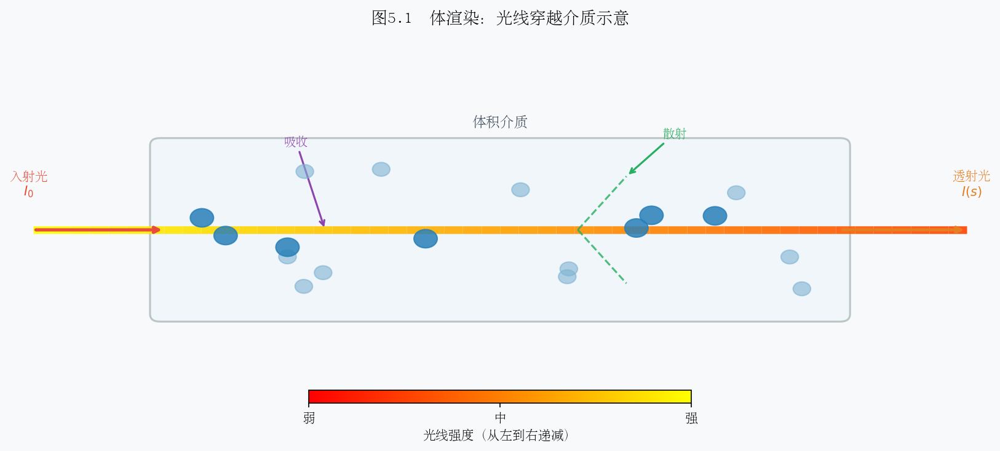
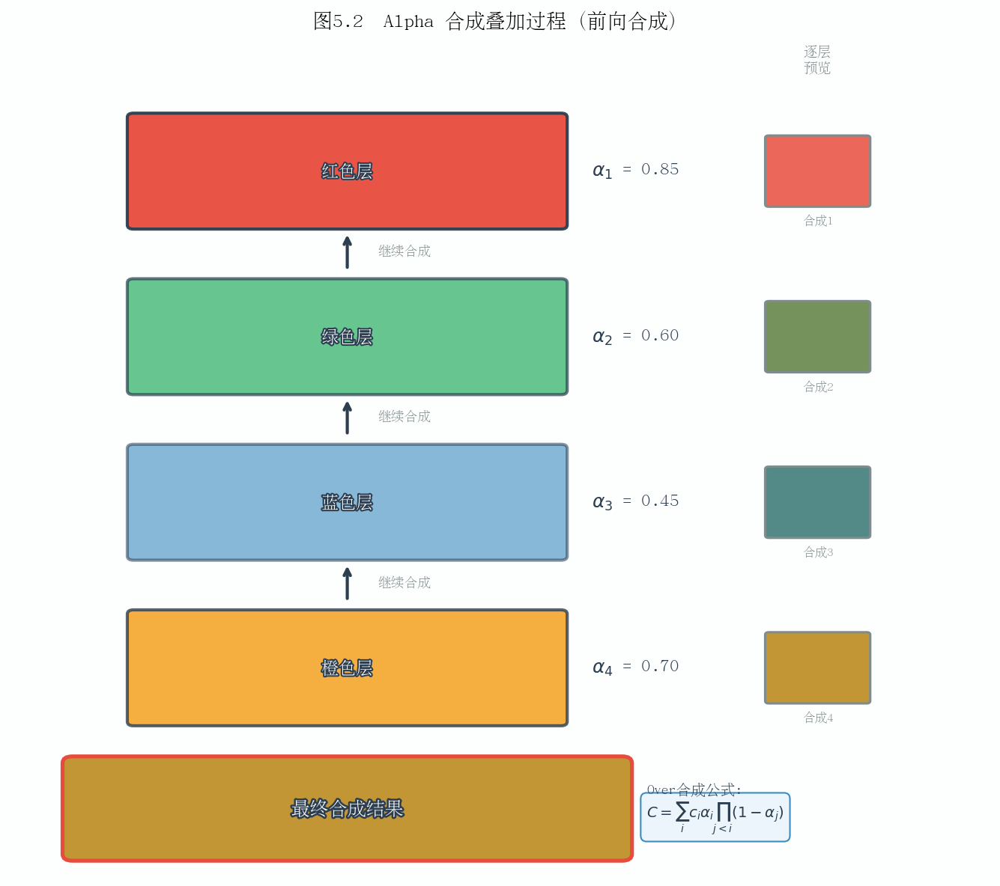

第五章：体渲染与 Alpha 合成
本章系统讲解体渲染的数学基础，从连续积分到离散 Alpha 合成，再到 NeRF 与 3DGS 两种截然不同的渲染实现路径，最后阐明可微渲染如何为场景参数优化提供梯度信号。
5.1 体渲染方程直觉推导
5.1.1 光线在介质中的传播
考虑一条从相机出发、沿方向 \(\mathbf{d}\) 传播的光线：
其中：
\(\mathbf{o} \in \mathbb{R}^3\)：光线起点（相机光心位置）
\(\mathbf{d} \in \mathbb{R}^3\)：单位方向向量
\(t\)：沿光线方向的参数（可理解为"深度"）
\(t_{\text{near}},\, t_{\text{far}}\)：近截面与远截面距离
光线在传播过程中会与介质中的粒子（尘埃、烟雾、半透明物体）发生三种基本交互：
现象 |
效果 |
物理描述 |
|---|---|---|
吸收（Absorption） |
能量损失 |
粒子将光能转化为热能 |
散射（Scattering） |
方向改变 |
光被偏转到其他方向（含外散射 out-scattering） |
自发光（Emission） |
能量增加 |
介质本身发出辐射（如火焰、荧光） |
在神经辐射场与高斯散射（3DGS）领域，吸收和自发光是建模的核心，散射通常被简化处理。
5.1.2 消光系数与透射率
定义消光系数（extinction coefficient / volume density）\(\sigma(\mathbf{r}(t)) \geq 0\)，表示单位路径长度内光线被遮挡的概率密度。
光线从起点 \(t=0\) 传播到位置 \(t\)，未被遮挡的概率（即透射率）为：
其中：
\(T(t) \in [0, 1]\)：到达位置 \(t\) 时光线仍然存活的比例
\(\sigma(\mathbf{r}(s))\)：路径上 \(s\) 处的体密度
积分 \(\int_0^t \sigma\, ds\) 称为光学深度（optical depth），记为 \(\tau(t)\)
直觉理解：若介质均匀（\(\sigma\) 为常数），则 \(T(t) = e^{-\sigma t}\)，即典型的 Beer-Lambert 衰减定律。密度越大、路径越长，透射率越接近 0（光线被完全遮挡）。
5.1.3 辐射传输方程
沿光线方向 \(\mathbf{d}\)，辐射亮度 \(L(\mathbf{r}(t), \mathbf{d})\) 的微分变化为：
其中 \(c(t) = c(\mathbf{r}(t), \mathbf{d})\) 是位置 \(t\) 处向 \(\mathbf{d}\) 方向辐射的颜色（自发光或散射入射光）。
对上式沿 \([t_{\text{near}}, t_{\text{far}}]\) 积分，得到像素的最终颜色：
其中：
\(C(\mathbf{r}) \in \mathbb{R}^3\)：像素最终渲染颜色（RGB）
\(T(t)\)：从起点到 \(t\) 的透射率，表示此处粒子"对像素的可见程度"
\(\sigma(\mathbf{r}(t))\, dt\)：位置 \(t\) 处的微元"不透明度"（遮挡概率微元）
\(c(\mathbf{r}(t), \mathbf{d})\)：该位置的辐射颜色
直觉：整个积分可理解为薄层贡献的加权求和——每一个无穷薄的介质层贡献自己的颜色 \(c(t)\)，权重为"它被看见的概率" \(T(t)\,\sigma(t)\)；靠近相机且前方无遮挡的层贡献最大，被厚层遮挡后方的层贡献趋近于零。

图示内容：一条光线从相机出发穿过半透明介质。介质中标注多个薄层，每层标出 \(\sigma_i\)、\(T(t_i)\)、\(c_i\)。箭头示意光线在各层被吸收/散射的过程，最终汇聚为像素颜色。右侧附透射率曲线 \(T(t)\) 随深度单调递减的示意图。
思考题 5.1
若介质中 \(\sigma \equiv 0\)（完全透明），体渲染方程退化为什么？此时像素颜色由什么决定？
透射率 \(T(t)\) 满足 \(T(0) = 1\) 且 \(T(t) \leq T(s)\)（\(t \geq s\)），请用物理语言解释这一单调性。
Beer-Lambert 定律 \(I = I_0 e^{-\sigma l}\) 是体渲染透射率的特例，试推导其对应的 \(\sigma\) 和 \(l\) 含义。
5.2 离散近似与 Alpha 合成
5.2.1 将连续积分离散化
连续体渲染积分在实际计算中无法直接求解，需要对光线进行离散采样。将 \([t_{\text{near}}, t_{\text{far}}]\) 划分为 \(N\) 个区间，第 \(i\) 个采样点位于 \(t_i\)，对应区间长度为：
在每个区间内假设密度和颜色恒定（分段常数近似），则第 \(i\) 个区间的局部透射率为：
对应区间的 Alpha 值（不透明度）定义为：
其中：
\(\sigma_i \geq 0\)：第 \(i\) 个采样点的体密度
\(\delta_i > 0\)：对应的步长（区间宽度）
\(\alpha_i \in [0, 1]\)：该层"遮挡"光线的概率
物理含义：\(\alpha_i\) 是光线穿过第 \(i\) 层时被吸收的概率；\(1 - \alpha_i = e^{-\sigma_i \delta_i}\) 是穿透该层的概率。当 \(\sigma_i \delta_i \to 0\)（极薄层），\(\alpha_i \approx \sigma_i \delta_i\)（线性近似）；当 \(\sigma_i \delta_i \to \infty\)，\(\alpha_i \to 1\)（完全不透明）。
5.2.2 前向 Alpha 合成公式
定义从相机到第 \(i\) 个采样点的累积透射率（前 \(i-1\) 层均未遮挡的概率）：
其中 \(T_1 = 1\)（第一层之前无遮挡）。最终像素颜色的离散近似为：
其中：
\(T_i\)：到达第 \(i\) 层时光线仍存活的概率（前景遮挡累积效果）
\(\alpha_i\)：第 \(i\) 层的不透明度
\(c_i \in \mathbb{R}^3\)：第 \(i\) 层的 RGB 颜色
\(T_i \alpha_i\)：第 \(i\) 层对最终像素的有效权重
类似地，可计算累积不透明度（前景 Alpha）和深度期望：
5.2.3 前向合成的递推形式
Alpha 合成可以按**由前到后（front-to-back）**的顺序递推计算，这正是渲染管线中最常用的实现方式：
初始条件：\(C_{\text{acc}}^{(0)} = \mathbf{0}\)，\(T_1 = 1\)。
当累积透射率 \(T_i < \epsilon\)（如 \(\epsilon = 0.0001\)）时，可提前终止——后续层的贡献可忽略不计，这是重要的**早退（early termination）**优化。

图示内容：从左到右展示前向 Alpha 合成的逐层叠加过程。共 5 层（\(i=1,\ldots,5\)），每层显示对应的颜色方块 \(c_i\)、不透明度 \(\alpha_i\)（以方块透明度直观表示）、累积透射率 \(T_i\)（数值递减）及当前合成结果 \(C_{\text{acc}}\)。底部附权重分布柱状图 \(T_i \alpha_i\)，展示前层贡献大、后层贡献衰减的规律。
思考题 5.2
当所有采样点的 \(\sigma_i \to \infty\)（即第一个非零密度层完全不透明），证明 Alpha 合成退化为表面渲染（只取第一个可见点的颜色）。
若将采样顺序颠倒（由后向前），能否得到正确结果？"由后向前"合成公式（Porter-Duff over 算子）与"由前向后"有何等价关系？
步长 \(\delta_i\) 不均匀时，对 \(\alpha_i = 1 - e^{-\sigma_i \delta_i}\) 的精度有何影响？如何通过更密集采样减少离散化误差？
5.3 NeRF 的体渲染实现
5.3.1 网络结构与输入输出
NeRF（Neural Radiance Field）用一个**多层感知机（MLP）**隐式表示整个场景：
其中：
\(\mathbf{x} = (x, y, z) \in \mathbb{R}^3\)：三维空间坐标
\(\mathbf{d} = (\theta, \phi) \in \mathbb{R}^2\)：视角方向（球坐标或单位向量）
\(\sigma \geq 0\)：体密度（与视角无关，先由 \(\mathbf{x}\) 预测）
\(\mathbf{c} = (r, g, b) \in [0,1]^3\)：辐射颜色（依赖视角，捕捉镜面反射）
为避免 MLP 偏好低频函数（无法拟合高频细节），输入坐标经**位置编码（Positional Encoding）**升维：
对 \(\mathbf{x}\) 取 \(L=10\) 个频率（60 维），对 \(\mathbf{d}\) 取 \(L=4\) 个频率（24 维）。
5.3.2 层次采样策略
单纯在 \([t_{\text{near}}, t_{\text{far}}]\) 均匀采样效率低——大部分空区域密度为零。NeRF 采用粗-精两阶段采样（Coarse-to-Fine）：
粗网络（Coarse）：均匀采样 \(N_c = 64\) 个点，获得初步颜色和沿光线的权重分布：
精网络（Fine）：将 \(\hat{w}_i\) 视为概率分布，用逆 CDF 采样重采样 \(N_f = 128\) 个点，聚焦于密度较高的区域（重要性采样）。最终合并两组共 \(N_c + N_f = 192\) 个点，用精网络渲染最终颜色。
5.3.3 渲染速度瓶颈
NeRF 的渲染效率受限于以下因素：
瓶颈 |
量化 |
来源 |
|---|---|---|
每像素 MLP 查询次数 |
\(\sim 192\) 次 |
每个采样点一次前向传播 |
MLP 参数量 |
\(\sim 5\text{M}\) |
8 层全连接，宽度 256 |
单帧渲染时间 |
\(\sim 30\) 秒（800\(\times\)800） |
GPU 串行推理 |
训练时间 |
\(\sim 1\)–\(2\) 天 |
梯度回传+采样 |
每像素需要数百次 MLP 前向传播，是导致渲染速度慢的根本原因。后续加速工作（Instant-NGP、Plenoxels、3DGS 等）均致力于消除或替换这一瓶颈。

图示内容：左侧为 NeRF 流程——光线采样点 \(\to\) 位置编码 \(\to\) MLP 前向传播（标注每像素 \(\sim\)192 次）\(\to\) 体渲染积分 \(\to\) 像素颜色。右侧为 3DGS 流程——三维高斯参数 \(\to\) 投影到屏幕 \(\to\) 分 Tile 光栅化 \(\to\) Alpha 合成 \(\to\) 像素颜色。两列以箭头对比，突出 MLP 查询（慢）vs. 光栅化（快）的本质差异。关键指标标注：NeRF 渲染 30s/帧 vs. 3DGS 实时 30fps。
思考题 5.3
NeRF 中体密度 \(\sigma\) 设计为只与位置 \(\mathbf{x}\) 相关（而非视角 \(\mathbf{d}\)），颜色 \(\mathbf{c}\) 与视角相关，这一设计有何物理依据？
层次采样的"重要性采样"如何保证最终颜色估计的无偏性？与均匀采样相比方差有何变化？
若将 MLP 替换为查找表（voxel grid），渲染速度如何变化？内存消耗如何？这是 Plenoxels 的核心思路，试分析其优缺点。
5.4 3DGS 的渲染公式推导
5.4.1 三维高斯的定义
3DGS 用 \(N\) 个三维各向异性高斯显式表示场景，第 \(k\) 个高斯的参数为：
其中：
\(\boldsymbol{\mu}_k \in \mathbb{R}^3\)：高斯中心位置
\(\Sigma_k \in \mathbb{R}^{3\times 3}\)（正定）：协方差矩阵，控制形状和方向
\(\mathbf{c}_k(\mathbf{d})\)：视角相关颜色（用球谐函数表示）
\(o_k \in [0,1]\)：基础不透明度（可学习标量）
协方差矩阵分解为 \(\Sigma_k = R_k S_k S_k^T R_k^T\)（\(R_k\) 为旋转矩阵，\(S_k = \text{diag}(s_x, s_y, s_z)\) 为缩放矩阵），以确保正定性并便于梯度优化。
5.4.2 三维高斯投影到屏幕
给定视图变换矩阵 \(W\)（世界坐标到相机坐标），三维高斯投影为二维高斯的近似推导如下。
设 \(\boldsymbol{\mu}_k' = W \boldsymbol{\mu}_k\) 为相机坐标系中的中心，利用EWA（Elliptical Weighted Average）近似，投影后的二维协方差为：
其中：
\(J \in \mathbb{R}^{2\times 3}\)：投影变换（透视除法）的雅可比矩阵（在 \(\boldsymbol{\mu}_k'\) 处线性化）
\(W\)：视图变换矩阵（旋转+平移）
\(\Sigma_k^{2D} \in \mathbb{R}^{2\times 2}\)：屏幕空间协方差
屏幕空间的二维高斯为：
其中 \(\mathbf{x} \in \mathbb{R}^2\) 为像素坐标，\(\boldsymbol{\mu}_k^{2D}\) 为投影后的二维中心。
5.4.3 每像素贡献与深度排序
对于像素 \(\mathbf{x}\)，第 \(k\) 个高斯贡献的有效 Alpha 值为：
其中：
\(o_k\)：学习到的基础不透明度
\(\mathcal{G}_k^{2D}(\mathbf{x})\)：二维高斯在像素 \(\mathbf{x}\) 处的响应值（空间衰减权重）
为正确渲染遮挡关系，所有高斯需按深度（相机空间 \(z\) 值）从小到大排序（由近到远），然后执行前向 Alpha 合成：
其中 \(T_k(\mathbf{x}) = \prod_{j < k, j \in \mathcal{S}(\mathbf{x})} (1 - \alpha_j(\mathbf{x}))\) 为累积透射率，\(\mathcal{S}(\mathbf{x})\) 为覆盖像素 \(\mathbf{x}\) 的高斯集合。
5.4.4 Tile-Based 光栅化
直接对所有像素遍历所有 \(N\) 个高斯的复杂度为 \(O(N \cdot H \cdot W)\)，难以实时渲染。3DGS 采用 Tile-Based 光栅化大幅加速：
步骤 1：屏幕分块（Tiling）
将屏幕划分为 \(16 \times 16\) 像素的 Tile，每个高斯投影后计算其覆盖的 Tile 范围（包围盒与各 Tile 的相交检测）。
步骤 2：生成键值对并排序
为每个（高斯, Tile）对生成一个 64 位键：
使用 GPU 并行**基数排序（Radix Sort）**对所有键排序，时间复杂度 \(O(M \log M)\)（\(M\) 为总（高斯, Tile）对数，\(M \ll N \cdot \text{Tiles}\)）。
步骤 3：逐 Tile 并行 Alpha 合成
排序后，属于同一 Tile 的高斯已按深度有序。为每个 Tile 启动一个 CUDA 线程块，各线程处理块内一个像素，协作地从共享内存读取高斯数据，执行前向 Alpha 合成直至早退。
整体渲染复杂度降至 \(O(M)\)（\(M \propto N\) 且与分辨率弱相关），实现实时渲染（30+ fps）。

图示内容：左上角为投影后的屏幕，用网格划分 \(16\times16\) 的 Tile，若干椭圆形二维高斯跨越多个 Tile。左下角展示键值对生成：每个（高斯, Tile）配对标注 TileID 和 Depth 编码的 64 位键。右侧展示 GPU 并行架构：每个 Tile 对应一个 CUDA Block，Block 内各线程处理一个像素，从共享内存（Shared Memory）批量读取排好序的高斯列表，执行 Alpha 合成。底部附伪代码：
for k in sorted_gaussians[tile]: if T < ε: break; C += T * α_k * c_k; T *= (1 - α_k)。
思考题 5.4
3DGS 的深度排序是全局排序（所有高斯按深度排序），而非针对每条光线独立排序。这种近似在什么情况下会产生渲染错误？（提示：考虑两个相互穿插的半透明高斯）
Tile 大小设为 \(16\times16\) 的理由是什么？若改为 \(8\times8\) 或 \(32\times32\)，对性能有何影响？
二维高斯的协方差 \(\Sigma_k^{2D}\) 随相机位置变化（透视投影的雅可比 \(J\) 与距离相关），这对训练过程中的梯度计算有何意义？
5.5 可微渲染意义
5.5.1 可微渲染的基本框架
可微渲染（Differentiable Rendering）的核心思想：将渲染过程设计为关于场景参数可微的函数，从而可以通过反向传播将像素级的重建误差梯度传递回场景参数。
给定相机位姿 \(\{\mathcal{P}_m\}_{m=1}^{M}\) 和对应的真实图像 \(\{I_m^{\text{gt}}\}\)，优化目标为：
其中：
\(\Theta\)：全体场景参数（NeRF 中为 MLP 权重；3DGS 中为所有高斯的 \(\boldsymbol{\mu}_k, \Sigma_k, \mathbf{c}_k, o_k\)）
\(C_m(\mathbf{x};\Theta)\)：由参数 \(\Theta\) 渲染出的第 \(m\) 个视角像素 \(\mathbf{x}\) 的颜色
\(\ell(\cdot, \cdot)\)：像素损失函数（如 L1、L2 或 SSIM）
5.5.2 梯度如何驱动高斯参数更新
以 3DGS 的单个高斯参数为例，分析梯度信号的传播路径：
颜色梯度 \(\nabla_{\mathbf{c}_k} \mathcal{L}\)：
梯度幅值正比于该高斯对像素的有效权重 \(T_k \alpha_k\)——越"可见"的高斯，颜色梯度越大，更新越快。
不透明度梯度 \(\nabla_{o_k} \mathcal{L}\)：
第一项为"增加自身贡献"，第二项为"遮挡后续高斯"的负效应。当渲染颜色与真实颜色不符时，该梯度驱动 \(o_k\) 升高或降低。
位置梯度 \(\nabla_{\boldsymbol{\mu}_k} \mathcal{L}\)：
其中 \(\nabla_{\boldsymbol{\mu}_k}\mathcal{G}_k^{2D}\) 来自高斯中心投影位置的偏移。此梯度驱动高斯向重建误差大的区域移动。
协方差/形状梯度 \(\nabla_{\Sigma_k} \mathcal{L}\)：
通过 \(\Sigma_k^{2D} = J W \Sigma_k W^T J^T\) 的链式法则，梯度从屏幕空间 \(\Sigma_k^{2D}\) 反传至三维协方差 \(\Sigma_k\)，进而通过 \(\Sigma_k = R S S^T R^T\) 分解传至旋转四元数 \(\mathbf{q}_k\) 和缩放向量 \(\mathbf{s}_k\)，驱动高斯拉伸、旋转或压扁以更好拟合局部几何。
5.5.3 自适应密度控制
仅靠梯度下降无法处理高斯数量的动态调整，3DGS 引入**自适应密度控制（Adaptive Density Control）**机制：
操作 |
触发条件 |
效果 |
|---|---|---|
致密化（Densification） |
位置梯度 \(|\nabla_{\boldsymbol{\mu}}\mathcal{L}|\) 超过阈值（欠重建区域） |
复制或分裂高斯，增加场景细节 |
克隆（Clone） |
高斯较小（覆盖面积不足） |
原地复制并沿梯度方向偏移 |
分裂（Split） |
高斯较大（覆盖面积过大） |
替换为两个更小的高斯 |
剪枝（Pruning） |
\(o_k < \epsilon\) 或高斯过大 |
删除冗余高斯，控制总数 |
这一机制每隔 \(100\) 次迭代执行一次，使得高斯数量从初始几十万逐渐增长到最终的百万量级，在细节丰富区域自动聚集更多高斯。
5.5.4 可微渲染的全局梯度流
整条链路全程可微，使得多视角重建问题转化为一个标准的神经网络优化问题——只需准备多视角照片和相机位姿，梯度下降即可自动找到与所有观测一致的三维场景表示。
思考题 5.5
为什么可微渲染需要对所有采样点/高斯均计算梯度，而不能只对"最近表面"计算梯度？（提示：考虑半透明物体和遮挡变化的情况）
3DGS 的深度排序操作（排序算法）是否可微？在优化过程中，两个高斯的深度顺序发生交换时，梯度如何处理？这是否会导致优化不稳定？
球谐函数用于表示视角相关颜色，其阶数 \(l\) 的选择（0 阶 = Lambertian，3 阶 = 16 系数）对可优化自由度和过拟合风险有何权衡？
本章小结
本章系统梳理了体渲染与 Alpha 合成的完整理论链条：
体渲染方程将光线穿过介质的物理过程数学化为透射率加权积分，核心公式 \(C = \int T(t)\sigma c\, dt\) 奠定了所有神经渲染方法的理论基础。
离散 Alpha 合成将连续积分近似为 \(C = \sum T_i \alpha_i c_i\)（其中 \(\alpha_i = 1 - e^{-\sigma_i \delta_i}\)），实现了计算机可处理的前向渲染算法。
NeRF 用 MLP 隐式编码密度和颜色，通过层次采样提高效率，但每像素数百次 MLP 查询导致渲染速度慢（~30s/帧）。
3DGS 将场景显式表示为三维高斯，通过 EWA 投影获得二维高斯，借助 Tile-Based GPU 光栅化和快速基数排序实现实时渲染（30+ fps），同时保持体渲染的 Alpha 合成语义。
可微渲染使梯度从像素误差反传至所有场景参数，配合自适应密度控制，将三维重建问题归纳为端到端的神经网络优化。
维度 |
NeRF |
3DGS |
|---|---|---|
场景表示 |
隐式 MLP |
显式三维高斯 |
渲染方式 |
光线步进+体渲染 |
Tile 光栅化+Alpha 合成 |
渲染速度 |
~30s/帧 |
~30fps（实时） |
训练时间 |
~1–2 天 |
~30–60 分钟 |
内存消耗 |
~5MB（MLP 权重） |
~300MB–1GB（高斯数据） |
可编辑性 |
困难 |
相对容易（显式几何） |
下一章将介绍 3DGS 的训练流程与工程实现，包括初始化、优化策略和工程加速技巧。
上一章：第四章：球谐函数与外观建模 | 下一章：第六章：3DGS 核心算法详解